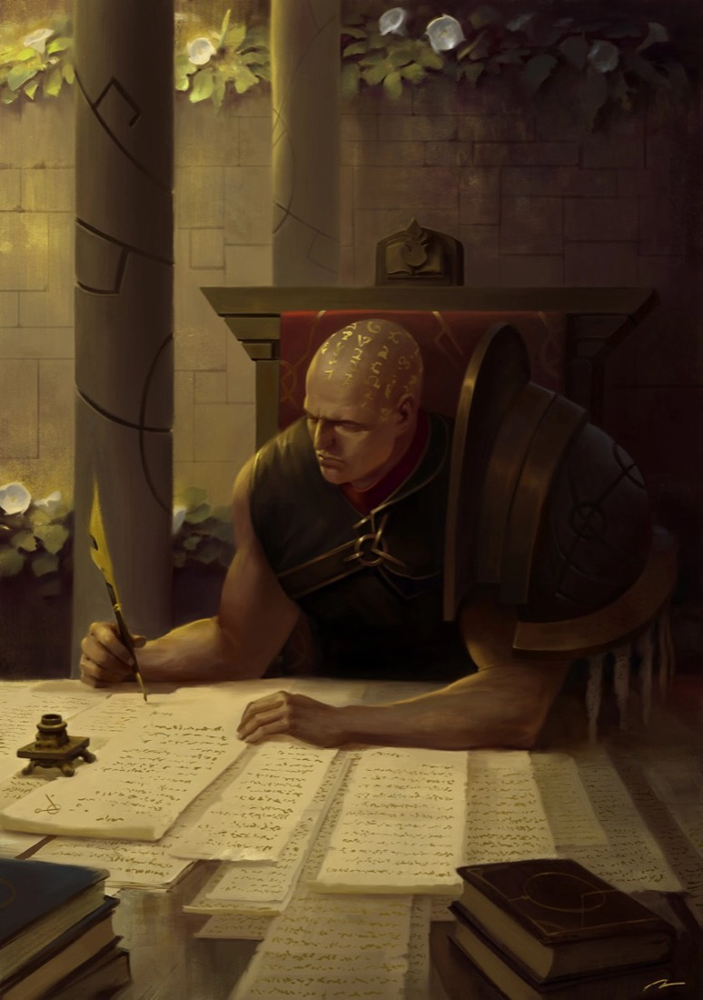
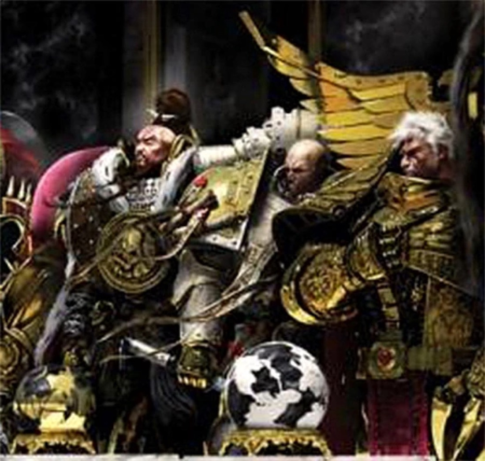

Lorgar
| Lorgar | |
|---|---|
| Lorgar Aurelian, the Urizen, the Bearer of the Word | |
 Lorgar in the armour of the Heresy years, before his apotheosis, from a Word Bearers illuminated plate Artwork © Games Workshop | |
| Primarch of the Word Bearers | |
| Tenure | 857.M30 – present |
| Daemon Prince of Chaos Undivided | |
| Status | Reported at large in the early Era Indomitus |
| Also known as | Lorgar Aurelian; the Urizen ("wisest of the wise"); the Bearer of the Word |
| Allegiance | Imperium of Mankind (until c. M31); Chaos (the four powers together) |
| Legion | |
| Homeworld | Colchis |
| Created | Terra, c. 792.M30, in the gene-laboratories of the Emperor of Mankind |
| Discovered | Colchis, 857.M30, during the Great Crusade |
| Status | Alive as a Daemon Prince; reported at large in the early Era Indomitus |
| Gene-father | The Emperor of Mankind |
| Foster father | Kor Phaeron |
| Brothers | The other primarchs; closest to Magnus the Red; bitterest toward Roboute Guilliman |
| Lieutenants | Erebus, First Chaplain; Argel Tal; Zardu Layak |
| Wargear | The Armour of the Word; the Helm of Lorgar; the sceptre-maul Illuminarum |
| Known for | The razing of Monarchia on Khur; the Pilgrimage; the conspiracy that corrupted Horus on Davin; the Battle of Calth; the Shadow Crusade; the failed coup at Ullanor |
Lorgar, called Lorgar Aurelian and in his youth the Urizen, was the primarch of the XVII Legion of the Space Marine Legions, the Word Bearers. A prophet of the Emperor's divinity, he was the most devout and the least martial of the primarchs, and the first to be corrupted by Chaos. Rebuked by the Emperor for the worship he had spread across the worlds that his Legion had conquered, he went in search of gods that would accept it. In the four decades before Horus declared himself against the Imperium he built, in secret, the conspiracy within the Legions that brought about the Warmaster's fall.[1][2]
Lorgar's part in the Horus Heresy was as its architect rather than its commander. He took part in the atrocity at Isstvan III and the Drop Site Massacre, sent the Word Bearers against the Ultramarines on Calth, and carried out the Shadow Crusade in Ultramar with his brother Angron, during which he gave Angron to Khorne. Convinced that Horus was too weak to defeat the Emperor, he made an attempt on the Warmaster's authority at Ullanor, and failed. Horus cast him out. A part of the Legion stayed with Horus and marched on Terra under the Dark Apostle Zardu Layak; Lorgar himself disappeared.[2]
His elevation to daemonhood is recorded in sealed Inquisitorial accounts. For ten thousand years he is held to have stayed on the daemon world of Sicarus in the Eye of Terror, leaving the Legion to a council of Dark Apostles, until the opening of the Great Rift, when he is reported to have walked again among men.[3]
Early life on Colchis
[edit]The Declined and Kor Phaeron
[edit]Lorgar's capsule fell on Colchis, a feudal world of deep and elaborate religion, whose people had once held advanced technology and now lived by the customs of the Covenant, a faith in four powers. The faith was a cult of the four powers of Chaos in a kinder aspect, though the Colchisians did not know it. The infant was found by a nomad tribe, the Declined, who named him Lorgar, "Rain-caller". Seventeen days later he was found by Kor Phaeron, a priest exiled from the capital, Vharadesh, for heresy. Kor Phaeron saw that the child was exceptional, killed the nomads who had found him so that his origin would remain a secret, and brought him up as a disciple.[1]
Lorgar was beaten and manipulated by his foster father, yet he remained loyal and learned the Covenant's theology far better than his teacher. He became convinced that the Covenant's many gods were aspects of a single higher being, which he called the One. Kor Phaeron regarded this as heresy, but he also saw that the boy's talent could win him control of Colchis. After Lorgar had saved his life in a mutiny among the caravan's crew, the priest's cruelty lessened and he named the youth the "Bearer of the Word".[4]
Conquest of Colchis
[edit]Lorgar's preaching won him a following of the Godsworn and, in time, an army. He freed slaves across Colchis and led the Godsworn to Vharadesh, where the gates opened to him after a sermon. The city's priests handed him the bodies of their rulers. He then moved from city to city, converting some and, where they refused the faith of the One, destroying them. The last city to hold out, Gahevarla, was shielded by a relic of the Dark Age that could raise a storm. In what seemed a miracle he walked up to the storm and parted it, and his army went through the gap. Lorgar had been born, as his Legion would later say, to make the world kneel.[4]
He had foreseen the Emperor's coming in a vision. When the Emperor arrived on Colchis in 857.M30, Lorgar believed him to be the god he had been preaching, the One in his visible form, and knelt. The Emperor, who rejected religion, did not correct him on the spot, and gave him the XVII Legion, the Imperial Heralds.[1]
The Great Crusade
[edit]
The Word Bearers
[edit]The Imperial Heralds were a Legion of the Emperor's Imperial Truth, whose members had been famously hostile to religion. Lorgar's changes to them were slow and thorough. He introduced Chaplains, whose function was to attend to the beliefs of the Legion, and he created new fraternities within the military hierarchy that were in effect devices for spreading his faith through the ranks. Over decades, as the old Terran-born members died and were replaced by recruits from Colchis and from the conquered worlds, the Legion came to believe in the divinity of the Emperor. When the last of the Imperial Heralds' original Terran core was gone, Lorgar gave the Legion its new name, the Word Bearers. Outside the Legion the name was understood as a sign of its part in bringing the Imperial Truth to humanity.[1]
Lorgar was determined to spread the faith to every world that his Legion encountered. The Word Bearers remained on the worlds they had won, raising cathedrals on the ruins of other faiths and settling clergy among the conquered. The method was costly in time. Where other Legions took dozens of worlds in a campaign, the Word Bearers took a handful. The other primarchs, who regarded Lorgar as the weakest of them, were not respectful.[2]
The rebuke on Khur
[edit]The slow pace of the Word Bearers' conquests was not noticed for a century, but when the War Council's clerks eventually compared the rates of conquest, the cause was found. The Emperor, who opposed all organised religion and who in particular could not endure that he should be worshipped, was disturbed. He summoned Guilliman, whose Legion was the Word Bearers' opposite in many ways, and sent the entire Ultramarines Legion, together with Custodes and Malcador the Sigillite, to Khur, a world sacred to the Word Bearers, whose capital Monarchia was held by them to be the perfect city. The Ultramarines razed it.[2]
The whole Word Bearers Legion, a hundred thousand strong, was called to assemble before the ruins in 963.M30. The Emperor appeared, forced every warrior to kneel, Lorgar included, and told them that he was not a god and would not tolerate such belief in his realm. He then left. Lorgar, who had expected praise, fell into a deep melancholy.[1]
The Pilgrimage
[edit]The fall
[edit]The records of the XVII Legion after Khur divide in two. In the public record the Word Bearers withdrew in shame and then returned to the Great Crusade with new energy, apparently chastened, and conquering swiftly. In the true record, which has been pieced together by the Inquisition from fragments, Lorgar had been approached in his despair by entities of the Warp who offered him what the Emperor had refused, a god who would accept his devotion. His advisers, among them Kor Phaeron and the First Chaplain Erebus, were steeped in the Covenant and open to the proposal.[2]
Lorgar undertook a pilgrimage in search of the truth about the Warp, from about 963.M30, that is recorded as lasting several years and that took him to the sites of ancient cults and the places where the powers of Chaos had left their mark. He learned the names of the four powers, and, in a place the Legion would call the Eternity Gate, he saw them in their true forms. He concluded that they were the divinity that he had sought and that the Emperor had misled humanity. For over four decades the Legion wore a mask of loyalty while it purged the last of its Terran members and spread a new creed through the ranks and through the apparatus of the Imperium.[2]
The conspiracy
[edit]The Word Bearers' conspiracy used the warrior lodges that had spread through the Legions in the later days of the Crusade. Through them Erebus drew other legionaries into the secret, among them Calas Typhon of the Death Guard. The conspiracy's greatest triumph was Horus himself. The Warmaster, wounded on the moon of Davin, was shown by the Word Bearers a path that led through the temple of Davin to the powers, and when he rose from his sickbed he served them. Lorgar's goal had been achieved by the elevation of the one primarch whom the rest of the Legions would follow.[2]
The Horus Heresy
[edit]Isstvan, Calth and the Shadow Crusade
[edit]The Word Bearers fought at Isstvan III in 005.M31, where Lorgar's brother Angron led the ground assault, and in the Drop Site Massacre. At Isstvan V a force of the Word Bearers under Lorgar clashed with the Raven Guard; the Gal Vorbak, his "Blessed Sons", possessed warriors who had been allowed to share their bodies with daemons, were among the Legion's most feared warriors, and Corvus Corax butchered them in a rampage that Lorgar met with a duel of his own.[5]
The Word Bearers' attack on the Ultramarines on Calth in 007.M31 was an act of revenge against Guilliman, the primarch who had destroyed Monarchia, and a means of removing the Ultramarines from the war. The Ultramarines, battered, held on, and Calth's defenders eventually drove the Word Bearers away. Lorgar and his more reliable warriors meanwhile carried out the Shadow Crusade with Angron's World Eaters into the rest of Ultramar, and in the course of it the primarch grew aware that Angron's Nails were killing him faster than anyone supposed. He took the one step that seemed possible to him, a ritual that gave Angron to the Blood God and ended his pain. In his own mind, Lorgar had saved his brother.[2]
Ullanor and the exile
[edit]After Horus fell at the Battle of Beta-Garmon, Lorgar came to the Warmaster's flagship with the Dark Apostle Zardu Layak, and, finding Horus comatose, agreed that the Traitors should be assembled at Ullanor for the final attack on Terra. Perturabo was sent to find Angron. Lorgar went to find Fulgrim, entering the Eye of Terror and the Webway under the guidance of an oracle, and eventually found him in the palace of the Dark Prince. When Fulgrim would not leave, Layak spoke his true name and bound him, and the Emperor's Children marched with Lorgar to Ullanor.[2]
By then Lorgar had concluded that Horus was too weak, that he would lead the Traitors to defeat on Terra, and that he himself should be Warmaster. At Ullanor he planned to disable Horus with a psychic scream and have Fulgrim attack, but the plan had been betrayed to the Warmaster beforehand. Horus, who had recovered with the help of his equerry Maloghurst, struck him down at once. Zardu Layak freed Fulgrim from his binding instead of ordering him to attack. Lorgar refused to fight the thing the Warmaster had become and pitied him. Horus ordered him to leave on pain of death. Of the Word Bearers, a force of about five thousand, who had been drawn from the Chapter of the Unspeaking, remained with Layak and the Warmaster, and went to Terra.[2]
Earlier Imperial accounts record that Lorgar himself led the Word Bearers to Terra and took part in the Siege. The Imperium's later and fuller records, which draw on the testimony of survivors of the Legion, hold the account above to be correct and treat the earlier version as a mistaken record.[3]
After the Heresy
[edit]The Word Bearers fled to the Eye of Terror and the Maelstrom after the Siege. Lorgar's later transformation into a Daemon Prince is recorded as the culmination of the Legion's offences and was marked, according to the Inquisition's sealed accounts, by a scream that echoed in the Warp. He withdrew to Sicarus and to the Templum Inficio, a temple where he remained in meditation and forbade interruption. The Legion was governed by a Dark Council, split into two factions, one led by Erebus and the other by Kor Phaeron. From the factory world of Ghalmek in the Maelstrom and from Sicarus, the Word Bearers have prosecuted wars of faith against the Imperium for ten thousand years.[6]
Lorgar left his isolation once to help his Legion against a hunting monster that proved to be the primarch Corvus Corax, who had been mutated by the Warp in a quest for vengeance. In their duel Corax drove him back, and as the portal closed Lorgar's brother swore to track him. In the Era Indomitus, with the opening of the Great Rift, there are reports that he has come back to the material universe, preaching the word of Chaos at the head of a Word Bearers army.[3]
Character and abilities
[edit]Lorgar was always the most reflective of the primarchs, whose power was in speech, argument and conviction, and whose ability to speak to the hearts of men was at least equal to that of any of his brothers. He was physically the weakest of the primarchs in the Great Crusade, though still superhuman, and his brothers did not respect him for it. His loss of faith in the Emperor was not the result of a lack of devotion, but of too much.[1]
He possessed minor psychic abilities, precognition and healing, and a certain skill in telekinesis. After his conversion his power rose sharply. He could vaporise several Space Marines by a look, summon daemons at will, and fought Guilliman as an equal. Kairos Fateweaver is recorded to have foretold that Lorgar could kill Guilliman at Calth, but that if he did so, the Traitors' rebellion would fail, and that he would not survive a battle with Corax.[6]
Wargear
[edit]- The Armour of the Word: a suit of Artificer armour based on the Mark IV pattern, inscribed with Colchisian sigils of protection and passages from the Book of Lorgar.
- The Helm of Lorgar: a helm that revealed hidden enemies and wracked them with pain. It later became a relic of the Word Bearers, given to a deserving Dark Apostle.
- Illuminarum: a sceptre-maul made for him by the primarch Ferrus Manus of the Iron Hands, said to be the pattern for the Chaplain's crozius.
- An archeotech pistol: a relic weapon of the Dark Age of Technology.
Legacy
[edit]
The Imperial Cult traces its origins in part to the faith Lorgar preached, and the Lectitio Divinitatus is said to descend from it. The irony is not lost on the Ecclesiarchy, which teaches that the Emperor's rejection of worship was the one error of his reign. The Word Bearers are held to have corrupted more of the Imperium's institutions than any other Legion. The Inquisition rates the primarch's reappearance as among the most dangerous consequences of the Great Rift.[3]
Timeline
[edit]| Date | Event |
|---|---|
| c. 792.M30 | The infant primarch is scattered from Terra and falls on Colchis, where Kor Phaeron of the Covenant takes him in. |
| Before 857.M30 | Preaches against the Covenant, raises the Godsworn and takes the city of Vharadesh, uniting Colchis. |
| 857.M30 | Greets the Emperor as the god he has foretold and takes command of the XVII Legion, the Imperial Heralds, which he renames the Word Bearers. |
| 858.M30 | The Word Bearers purge the Cult of the Arachiana. |
| 903.M30 | The Legion brings Khur to compliance and raises the city of Monarchia. |
| 963.M30 | The Emperor orders the Ultramarines to raze Monarchia and rebukes the kneeling Word Bearers in its ashes. |
| c. 963–966.M30 | Lorgar's pilgrimage into the regions of the Warp; the Word Bearers discover Cadia in 966.M30. |
| 005.M31 | The Word Bearers fight at the Isstvan III atrocity. |
| 006.M31 | Fights Corvus Corax at the Drop Site Massacre on Isstvan V. |
| 007.M31 | The Word Bearers betray the Ultramarines at the Battle of Calth; the Ruinstorm is raised. |
| 007–008.M31 | Leads the Shadow Crusade with Angron and raises him to daemonhood at Nuceria in 008.M31. |
| c. 012–013.M31 | Finds Horus comatose after the fighting around Beta-Garmon and calls the Traitor muster at Ullanor; his plan to seize the office of Warmaster fails and he is sent away. |
| After 014.M31 | The Word Bearers flee to the Eye of Terror and the Maelstrom; Lorgar becomes a Daemon Prince on Sicarus. |
| Early M42 | Reported at large in the Era Indomitus. |
See also
[edit]Notes
[edit]References
[edit]- ^ a b c d e f Reynolds, Anthony. Dark Creed (novel). Black Library, pp. 9, 111, 184-185. Codex Heretic Astartes - Chaos Space Marines (8th Edition), pg. 40. Games Workshop.
- ^ a b c d e f g h i j McNeill, Graham. False Gods (novel). Black Library. McNeill, Graham. Fulgrim (novel). Black Library.
- ^ a b c d A Thousand Sons (novel) by Graham McNeill. Dembski-Bowden, Aaron. The First Heretic (novel). Black Library.
- ^ a b Dembski-Bowden, Aaron. Aurelian (novella). Black Library. Abnett, Dan. Know No Fear (novel). Black Library.
- ^ Dembski-Bowden, Aaron. Betrayer (novel). Black Library. Thorpe, Gav. Lorgar: Bearer of the Word (novel). Black Library.
- ^ a b Thorpe, Gav. Saturnine (novel). Black Library, Limited Edition Artwork. French, John. Slaves to Darkness (novel). Black Library.